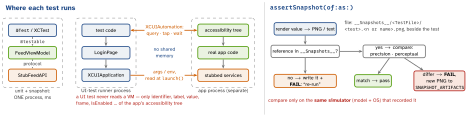

testing · folio
In one line: Logic lives in a ViewModel and a router with injected dependencies, tested in-process in milliseconds; snapshots pin what a view looks like (one simulator, one reference file); UI tests drive the real app from another process through the accessibility tree — few, slow, addressed by identifier.
Download PDF Print view LaTeX source


ViewModel tests
- A SwiftUI
Viewis a value; what it renders is not readable through public API (third-party ViewInspector reflects on theViewstructs). So: thin View, logic in a VM. Test = construct with doubles → call an input → assert state. - State as an
Equatableenum (idle · loading · loaded · error) and display strings computed in the VM (priceText == "$10.00");#expect(a == b)prints both sides on failure. Inject what varies: API, clock,Date, UUIDs, locale. - Isolation: XCTest runs synchronous test methods on the main actor; Swift Testing runs every test on an arbitrary task → a
@MainActorVM needs a@MainActortest or suite. - Sequences.
ObservableObject:vm.$state.sink{seen.append($0)}gets the current value, then each new one — fromwillSet, sovm.stateread inside the sink is still the old value.@Observable(Swift 5.9, iOS 17) has no publisher:withObservationTrackingcallsonChangeonce, on the first change — re-register per change.Observations{ vm.state }(Swift 6.2, iOS 26) is anAsyncSequenceof transactions: mutations up to the next suspension point coalesce, so values can be skipped — not a recorder of every state. - To catch
.loading, hold the double: a stub that suspends until the test releases it; assert mid-flight, then release. - Big state?
assertSnapshot(of: vm.state, as: .dump)keeps a reviewed text reference instead of a page of hand-written expectations.
@MainActor @Suite struct FeedViewModelTests {
@Test func offline_showsError() async {
let vm = FeedViewModel(api: StubFeedAPI(.failure(URLError(.notConnectedToInternet))))
await vm.load()
#expect(vm.state == .error("Offline")) }
@Test func loading_whileInFlight() async {
let api = GatedFeedAPI() // suspends until release()
let vm = FeedViewModel(api: api)
let load = Task { await vm.load() }
await api.waitUntilCalled()
#expect(vm.state == .loading)
api.release(with: [.sample]); await load.value
#expect(vm.state == .loaded([.sample])) } }Coordinator / router tests
- Test the decision (which route for which event), never a real
push: inject aRouterprotocol and let a spy record calls. - SwiftUI: an
@Observablerouter ownsvar path: [Route]bound toNavigationStack(path:)→ assert the array.NavigationPathis type-erased — onlycount,isEmpty,append,removeLast,codable; elements can’t be read back (it isEquatable: compare with a path you build). - Deep links are pure functions URL →
[Route]: table-test them with@Test(arguments:), one case per URL.
final class SpyRouter: Router {
private(set) var shown: [Route] = []
func show(_ r: Route) { shown.append(r) } }
@Test func selectingItem_routesToDetail() {
let router = SpyRouter()
FeedCoordinator(router: router).didSelect(Item(id: 7))
#expect(router.shown == [.detail(id: 7)]) } // the DECISIONTraps
- Querying by label:
app.buttons["Log in"]matches the label, passes in English, fails in a German run.accessibilityIdentifieris “for testing”, never shown or localized. sleep(3): flaky when short, slow when long — wait for the element or property.- A gated stub never released hangs the run — give the suite
.timeLimit(.minutes(1))(minutes are the smallest unit). - UI tests on the real backend: nondeterministic, slow, may mutate data — stub by launch env.
- CI on default
.missing: a lost reference is re-recorded, the run fails, the retry passes →.never. Never commit.all. “Just re-record” approves a regression unseen. - Reference from another simulator or OS → fails on CI: pin model, OS, locale, appearance, text size; fix dates and IDs.
- An interruption monitor for an expected alert never fires — tap the alert directly.
XCUITest toolkit (XCUIAutomation)
| need | API · fact |
|---|---|
| clean start | launch(): synchronous; terminates a running instance; a launch failure halts the test |
| resume | activate(): launches if needed, never terminates; reuses the last launch()’s args/env |
| configure | launchArguments / launchEnvironment — changed after launch = next launch only; open(url) launches by URL |
| find | app.buttons["id"] matches identifier or title, label, value, placeholder; .element fails unless exactly 1 match, .firstMatch stops at the first (faster) |
| wait | waitForExistence(timeout:); Xcode 16: waitForNonExistence, wait(for: \.value, toEqual:, timeout:) → Bool · exists ≠ isHittable (a hit point can be computed) |
| alerts | expected → tap it; addUIInterruptionMonitor runs only when unrelated UI blocks an interaction; LIFO; true = cleared |
| state | resetAuthorizationStatus(for:) (iOS 13.4) · XCUIDevice.shared .orientation .appearance .location |
| a11y | try app.performAccessibilityAudit() (iOS 17): fails the test itself; handler true = ignore; on-screen only · Xcode 27: voiceOverService.moveForward() → speech |
| matrix | runsForEachTargetApplicationUIConfiguration = true: appearance × orientation × localization (Xcode 27 launch-test template) |
| perf | XCTApplicationLaunchMetric · XCTHitchMetric (iOS 26) |
| evidence | XCTAttachment(screenshot:) default .deleteOnSuccess; test plan keeps video + screenshots of failing runs unless “On, and keep all” |
Xcode 26 recording: the record button at the editor edge writes Swift, each line with alternative queries — prefer identifier over index. Report (Xcode 15+): video replay, Automation Explorer at the failure. Xcode 27: app-crash severity off / warning / failure / fatal per test plan. Swift Testing has no UI automation — UI tests stay XCTest.
override func setUpWithError() throws { continueAfterFailure = false }
@MainActor func test_login_showsWelcome() throws {
let app = XCUIApplication() // the Target Application
app.launchArguments += ["-AppleLanguages", "(de)"]
app.launchEnvironment["STUB_SCENARIO"] = "loggedOut"
app.launch() // args/env read HERE
LoginPage(app: app).logIn(email: "a@b.co", password: "pw")
XCTAssertTrue(app.staticTexts["welcome.title"].waitForExistence(timeout: 5))
try app.performAccessibilityAudit() }
// Page Object: one type per screen owns its identifiers + actionsSnapshot tests (swift-snapshot-testing)
assertSnapshot(of:as:named:record:timeout:)(timeout 5 s). Strategies:.image(UIView, VC, SwiftUI),.recursiveDescription,.dump,.json,.plist,.raw(URLRequest); a text reference shows its diff readably in code review.- SwiftUI layout:
.sizeThatFits(default) ·.fixed(width:height:)·.device(config: .iPhone13); a config is size + safe area + traits only — newest iPhone presetiPhone13ProMax.traits:for dark mode / text size;drawHierarchyInKeyWindow: trueto renderUIAppearanceand visual effects. precision= share of pixels that must match;perceptualPrecision= how close each pixel must be (CILabDeltaE); 0.98–0.99 ≈ the human eye. Both default 1.assertInlineSnapshotwrites a text snapshot into the test source, as a trailing closure.
| record | behaviour (since 1.17, Jul 2024) |
|---|---|
.missing | default: record only absent references (and fail) |
.all | rewrite every reference — every assertion fails |
.failed | re-record only failing ones (keeps in-threshold passes untouched) |
.never | a missing reference is a failure — for CI |
Set per call (record:), per scope (withSnapshotTesting(record:)), per suite (@Suite(.snapshots(record:))) or per run (SNAPSHOT_TESTING_RECORD=never).
Which test sees what
| test | sees | breaks on | misses |
|---|---|---|---|
| VM unit | state, strings | logic change | layout, wiring |
| router | routes | flow change | real transitions |
| snapshot | pixels / text dump | any pixel, new OS | behaviour, taps |
| UI (XCUITest) | a11y tree of the real app | copy, timing, data | internals; slow |